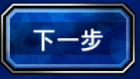
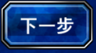

import Utilities import TrainLB as LB reload(Utilities) reload(LB) myRobot = JRobot() missionNextStepRegion = Region(914,909,90,44) missionNextStepPicture = FollowerRegion = Region(768,209,139,47) LaunchRegion = Region(910,883,107,65) while True: start = time.time() # enter the explore # java.awt.Color[r=20,g=78,b=45] (700, 389) exploreColor = Color(0x14, 0x4E, 0x2D) while not myRobot.getPixelColor(700,389) == exploreColor: print "waiting for explore color" wait(1) while myRobot.getPixelColor(700,389) == exploreColor: click(Location(700,389)) print "clicking explore" wait(0.5) # Dismiss mission description # java.awt.Color[r=0,g=54,b=142] (1010, 946) dismissColor = Color(0x00, 0x36, 0x8E) while not myRobot.getPixelColor(1010, 946) == dismissColor: print "waiting for dismissColor" wait(1) while myRobot.getPixelColor(1010, 946) == dismissColor: click(Location(1010, 946)) myRobot.delay(500) while not FollowerRegion.exists(): print "iteration ", count, ": waiting follower" click(missionNextStepRegion) myRobot.delay(500) # choose no follower wheel(noFollowerRegion, WHEEL_DOWN, 100) click(Location(953, 993)) # ready to launch while not LaunchRegion.exists(): click(Location(810, 404)) wait(1) click(LaunchRegion) wait(3) # make sure entered the explore #java.awt.Color[r=57,g=114,b=194] (1135, 1030) switchMapColor = Color(0x39, 0x72, 0xC2) while not myRobot.getPixelColor(1135, 1030) == switchMapColor: click(Location(962, 646)) print "waiting for switch map" wait(1) # start training LB.doTrainLB() wait(3) # return to reference point myRobot.mouseMove(961, 494) mouseDown(Button.LEFT) mouseMove(0, 270) myRobot.delay(3000) mouseUp(Button.LEFT) Utilities.moveUp() myRobot.delay(2000) count = 0 while count < 7: Utilities.moveUp() myRobot.delay(300) count = count + 1 count = 0 while count < 16: Utilities.moveLeft() myRobot.delay(300) count = count + 1 count = 0 while count < 20: Utilities.moveUp() myRobot.delay(300) count = count + 1 count = 0 while count < 32: Utilities.moveRight() myRobot.delay(300) count = count + 1 count = 0 while count < 16: Utilities.moveDown() myRobot.delay(300) count = count + 1 count = 0 while count < 3: Utilities.moveRight() myRobot.delay(300) count = count + 1 Utilities.moveDown() myRobot.delay(300) Utilities.moveUp() myRobot.delay(300) Utilities.moveLeft() myRobot.delay(300) Utilities.moveLeft() myRobot.delay(300) Utilities.moveLeft() myRobot.delay(300) count = 0 while count < 37: Utilities.moveUp() myRobot.delay(300) count = count + 1 Utilities.moveRight() myRobot.delay(300) Utilities.moveRight() myRobot.delay(300) Utilities.moveRight() myRobot.delay(300) count = 0 while count < 5: Utilities.moveUp() myRobot.delay(300) count = count + 1 count = 0 while count < 2: Utilities.moveLeft() myRobot.delay(300) count = count + 1 count = 0 while count < 4: Utilities.moveUp() myRobot.delay(300) count = count + 1 Utilities.moveLeft() myRobot.delay(300) Utilities.moveUp() myRobot.delay(300) count = 0 while count < 12: Utilities.moveUp() myRobot.delay(300) count = count + 1 count = 0 while count < 16: Utilities.moveDown() myRobot.delay(300) count = count + 1 count = 0 while count < 3: Utilities.moveRight() myRobot.delay(300) count = count + 1 count = 0 while count < 5: Utilities.moveDown() myRobot.delay(300) count = count + 1 count = 0 while count < 19: Utilities.moveLeft() myRobot.delay(300) count = count + 1 myRobot.mouseMove(961, 494) mouseDown(Button.LEFT) mouseMove(0, -270) myRobot.delay(3000) mouseUp(Button.LEFT) click(Location(1121, 291)) wait(3) click(Location(1121, 291)) wait(2) LB.doBattle() click(Location(962, 583)) myRobot.delay(500) click(Location(962, 583)) myRobot.delay(500) click(Location(962, 583)) myRobot.delay(500) click(Location(1142, 292)) # The last mine wait(2) count = 0 while count < 3: Utilities.moveLeft() myRobot.delay(300) count = count + 1 Utilities.moveDown() myRobot.delay(300) Utilities.moveDown() myRobot.delay(300) Utilities.moveUp() myRobot.delay(300) Utilities.moveUp() myRobot.delay(300) count = 0 while count < 3: Utilities.moveRight() myRobot.delay(300) count = count + 1 myRobot.mouseMove(961, 494) mouseDown(Button.LEFT) mouseMove(0, -270) myRobot.delay(3000) mouseUp(Button.LEFT) click(Location(1162, 291)) wait(5) #1st next step NextStepRegion = Region(862,837,206,120) while not NextStepRegion.exists(,1): print "iteration ", count, ": waiting 1st next step" click(Location(712, 745)) wait(1) print "iteration ", count, ": 1st next step found" wait(1) while NextStepRegion.exists(,1): click(NextStepRegion) # 2nd next step while not NextStepRegion.exists(,1): print "iteration ", count, ": waiting 2nd next step" click(Location(712, 745)) wait(1) while NextStepRegion.exists(,1): click(NextStepRegion) # Friends FriendApplyRegion = Region(750,747,124,79) wait(1) while FriendApplyRegion.exists(): click(FriendApplyRegion) wait(1) # Close Mission CloseMissionRegion = Region(726,620,180,87) while CloseMissionRegion.exists(): click(CloseMissionRegion) wait(1) print "one round training took ", time.time() - start remaining = 900 - (time.time() - start) if remaining > 0: wait(remaining)